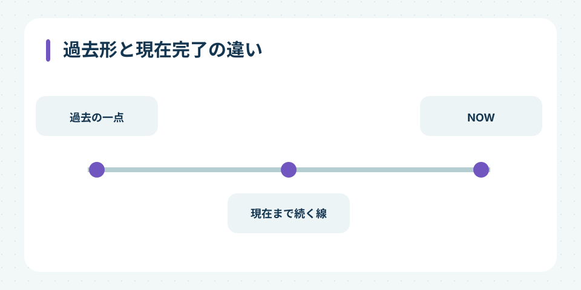

英語 / UNIVERSITY ENTRANCE EXAM
現在完了の4用法を整理｜経験・継続・完了・結果
現在完了は「過去に始まったことが現在とつながる」ことを表す形です。過去形との違いが分かると、since・for・alreadyなどの選び方も整理できます。
EN
このページで学べること
have + 過去分詞の見分け方と例文。要点を読んだら、最後の確認問題で理解度をチェックしましょう。
POINT 01
現在完了は過去と現在のつながり

have / has + 過去分詞
過去形との違い
I lost my key yesterday.（昨日鍵をなくした）
I have lost my key.（鍵をなくして、今も見つかっていない）
過去形は過去の出来事を述べる形。現在完了は現在への影響があることを伝えます。
POINT 02
4用法の目印
| 用法 | 例 | 典型表現 |
|---|---|---|
| 経験 | I have visited Kyoto twice. | ever, never, once, twice |
| 継続 | She has lived here for five years. | since, for |
| 完了 | I have just finished it. | just, already, yet |
| 結果 | He has gone to Tokyo. | 現在の状態に注目 |
一つの文が複数のニュアンスを持つ場合もあります。4用法は学習上の整理です。
POINT 03
since と for、been と gone
since の後には始点（since 2020 / since Monday）、for の後には期間（for two years）が続きます。have been to は訪問経験、have gone to は行ってしまって現在ここにいないという意味になりやすいです。
yesterday や last year など「終わった過去の時点」を直接表す語は、通常の現在完了とは組み合わせません。
PRACTICE
確認問題に挑戦！
全3問。答えを考えてから「解答と解説を見る」を押してね。
Q01
I ( ) lived here since 2020.
解答と解説を見る ＋
正解・解答例
have
since 2020 から現在までの継続なので have lived。
Q02
She has ( ) to Osaka three times.
解答と解説を見る ＋
正解・解答例
been
「訪れた経験」なので has been to。
Q03
「私はたった今宿題を終えた」を英訳
解答と解説を見る ＋
正解・解答例
I have just finished my homework.
have + 過去分詞、just は完了の目印。
今日のまとめ
現在完了は過去と現在をつなぐ。since＝始点、for＝期間。
ここまで読めたら、ひと区切り。
理解できたら学習済みにチェックして、次の記事へ。
記事について
StudyMasterの無料学習コンテンツです。AIを補助的に用いて作成しています。例題・解答は公開前にご自身でも確認してください。内容に誤りがある場合は、学校の教科書などと照合してください。
公開・更新：2026年11月12日